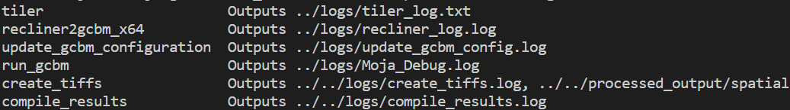
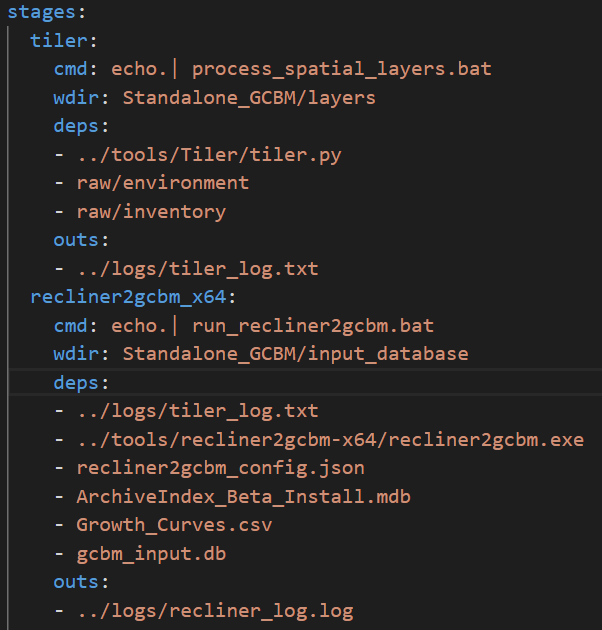
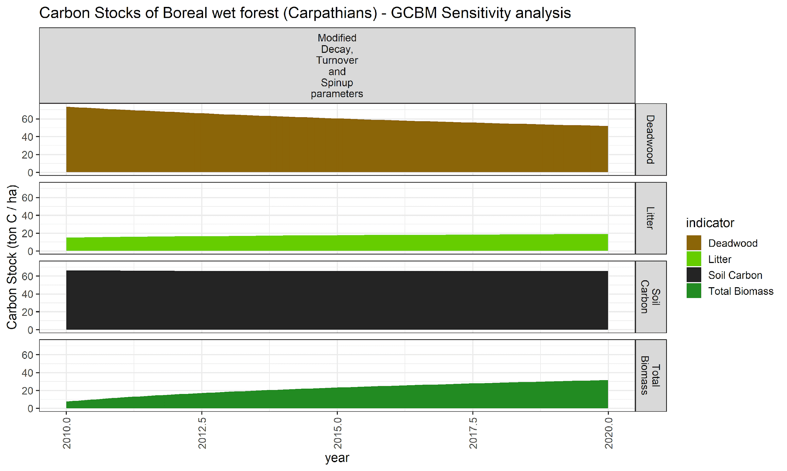
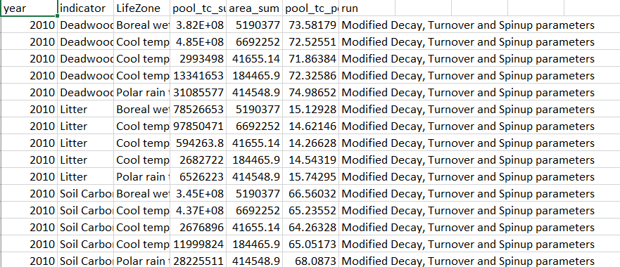
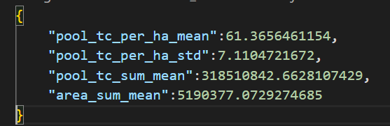
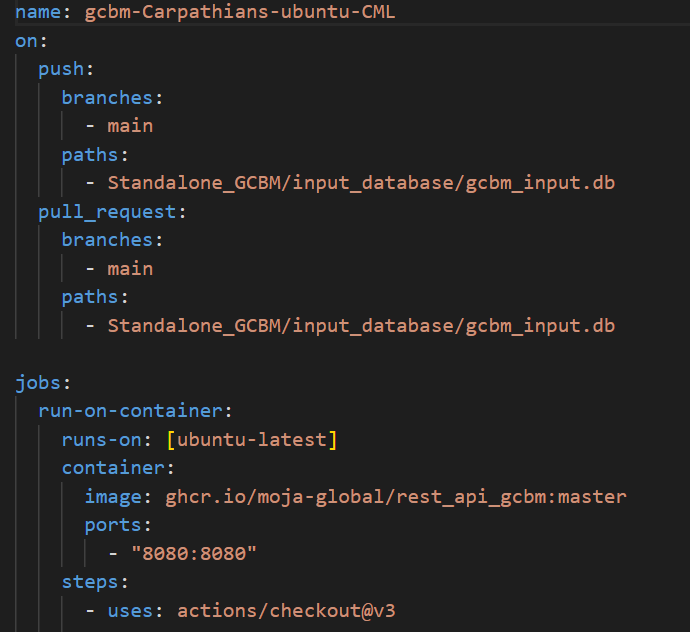
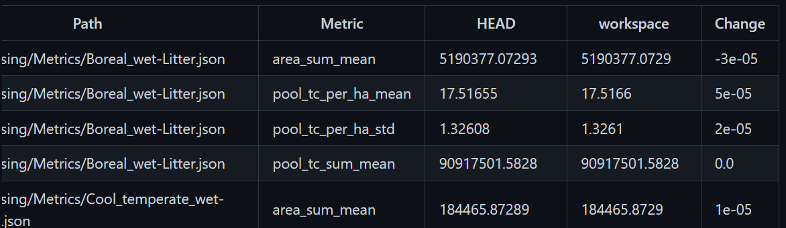

Open source · Outreachy internship · moja global
The objective of this project was to apply MLOps techniques for distributed land sector modelling with CML action for GCBM Carpathians being the core part. The project has the following components for GCBM Carpathians:
i. DVC pipeline
ii. Postprocessing
iii. CML Workflow
Moja global is a non-profit, collaborative project that brings together a community of experts to develop open-source software that allows users to accurately and affordably estimate greenhouse gas emissions and removals from the AFOLU sector.
I am really grateful to my mentors Andrew O'Reilly-Nugent, Simple Shell and Radis Toumpalidis for helping me throughout this internship. I am thankful for their encouragement, appreciation and feedback, which helped me in improving my contributions and gaining valuable skills and knowledge.
I would also like to thank my fellow interns — Hien and Bolu Adesanya — for helping me and discussing ideas and results to contribute better.
Full Lands Integration Tool (FLINT), moja global's flagship software, is an open-sourced tool developed by moja global that gives countries the ability to build and run advanced MRV (measuring, reporting and verification) system quickly and efficiently. FLINT reads spatial and aspatial data, call event-driven modules to generate spatial & tabular output and log errors.
GCBM (Generic Carbon Budget Model) is an open-sourced model that operates on the FLINT platform and is a spatially-explicit modelling framework. GCBM specifies a high level of detail in the scientific model and has the capability to run these over large spatial scales. This help generate detailed maps of carbon changes and emission associated with use of land.
Finally, GCBM Carpathians is the implementation with Carpathian montane forests, a mountain range in Central Europe.
The formal definition of Machine Learning Operations (MLOps) defines it as the extension of the DevOps methodology to include Machine Learning and Data Science assets as first-class citizens within the DevOps ecology.
Machine Learning is a powerful tool and is capable of solving a number of problems that may be too complicated to solve traditionally. Some examples are: prediction, classification, recommendation and anomaly detection. However, simply building a model on one's machine is far from being useful while considering a product in a business. The model needs to be deployed into production, monitored and managed to harness its potential and generate business value. MLOps bridges this very gap between having a model on a machine and deploying it into production environment.
In other words, MLOps provide with capabilities to deploy, monitor, manage and govern ML models in production, hence offering reproducibility, resilience and scalability.
The DVC pipeline is included in the CML workflow PR to include postprocessing as well.
a. The current Standalone GCBM model has the run_all.bat batch file which runs all the stages. However, the execution of individual stages with the change in the files used in numerous stages is complex to understand and hard to reproduce.
b. With the current Standalone GCBM, it is difficult to analyse and compare the model result with various configurations. One has to run the required stages and analyse the outputs manually.
To create a DVC pipeline to facilitate the aforesaid issues. DVC provides a more structured way of monitoring and executing stages as they are modified or removed. Furthermore, here, DVC has been used to store large dataset files and results away from the git repository.
Data Version Control (DVC) is a tool developed by iterative.ai that helps manage data and ML models making them shareable and reproducible. DVC works along with git and stores data and models outside of git, along with providing a version control system for the same.
DVC helps store large data and models in remote storages such as Google Drive, S-3, etc. and retrieve it as required. A .dvc file is generated when data files are pushed to the remote storage. This file contains metadata about the size, version and location of the data files and are kept in the git repository as placeholders.
DVC tracks all the dependencies, and the outputs, of stages of the pipeline. This helps skip the stages that did not have any modifications and only execute the ones that had some changes made.
Subsequently, DVC provides the facility to run multiple experiments, with different names, to keep a record of experiments. One can run various experiments, with different configurations, and compare the results. DVC also caches these runs. Thus, if DVC comes across dataset or configuration stored in cache, it simply loads the same or related experiment instead of re-running the whole experiment.
There are 6 stages in the Standalone GCBM Carpathians model. These stages were put into the pipeline through DVC. DVC comprises of a YAML file, which holds information about various stages, and a lock file, which provides specific version of files along with their md5 hashes, timestamp of creation and size. Each stage in the dvc.yaml file, consists of the command to be executed for that stage, the working directory where the command is to be executed, dependencies for the stage and the outputs. To execute the DVC pipeline in a particular order, one can provide the output of one stage as the input for the next stage in the pipeline. Herein, log files from each stage were used as its output. The outputs of each stage are tracked by DVC and hence, are not by git (unless used with --force).
NOTE: this DVC pipeline uses batch files for all 6 stages
The 6 stages of GCBM Carpathians in the DVC pipeline:

To add a stage into the dvc.yaml file, dvc stage add is used. Alternately, one can directly add a stage into the yaml file. A snippet of the dvc.yaml file is described below:

The command dvc repro (reproduce the pipeline), facilitates the user to recreate or reproduce the pipeline and execute all the stages in a Standalone GCBM model. With the help of DVC, one can monitor how the different stages vary if the dependencies change. This eliminates the need to execute the whole pipeline for a small change in a configuration or any input file. Alternately, the user can run various experiments, with different configurations, using dvc exp run in the same environment and compare the results of the same. Moreover, individual stages can be run using dvc repro -s <stage-name>.
The datasets and results tracked by DVC were uploaded to Google Drive remote storage. One can add a remote store with dvc remote add.
The information (name of storage and url) about the remote storage is stored in .dvc/config file. To push data to a remote storage, dvc push is used and to pull data dvc pull is used.
Finally, one can view metrics and plots using dvc metrics show and dvc plots show. Difference in metrics and plots can be viewed using dvc metrics diff and dvc plots diff.
GCBM Carpathians did not have a postprocessing step wherein the results can be easily interpreted and compared to different simulation runs with varying configurations.
To add postprocessing stage to GCBM Carpathians. Following uniformity, similar to GCBM Belize, an R script for postprocessing has been added. Moreover, a create_metrics.py script has been added to be used as metrics in the DVC pipeline. This makes it easier to compare metrics produced by various experiments.
The compiled dataset consists of 12 tables. Postprocessing only follows indicators from the v_pool_indicators for 4 indicators — Total Biomass, Deadwood, Soil Carbon and Litter. Carpathians consists of five lifezones — Boreal wet forest, Cool temperate moist forest, Cool temperate steppe forest, Cool temperate wet forest and Polar rain tundra forest. To achieve the same, year, Lifezone, indicator, pool_tc and area of the lifezone has been extracted from the tables v_age_indicator and v_pool_indicator. It further calculates pool_tc_per_ha. This data is plotted as well as saved to csv with values for every 5 years as well as a full sensitivity csv. For metrics, common statistical measures were used — mean and standard deviation.
Plot for Boreal wet forest:

Carbon Stocks of Boreal wet forest (Carpathians) — GCBM Sensitivity analysis
Snippet of csv:

Metric file (json) for Boreal wet forest:

Note: This PR includes Postprocessing, DVC pipeline and CML workflow files.
There is no process to provide automated report of the metrics and results generated from various GCBM configurations. Furthermore, there is no mechanism to check the integrity of the code before merging it to the repository.
To add CML (Continuous Machine Learning) action for GCBM Carpathians which provides an automated report of the simulation carried out. The report entails plots generated and the difference in metrics between HEAD and workspace.
Continuous Machine Learning (CML) is a Continuous Integration and Continuous Deployment tool developed by iterative.ai. CML workflows help in running the simulation and generating reports for comparison as well as checking the integrity of the new code before merging. CML does not require additional tech stack and makes use of existing sites and tools such as Github and Docker.
A cml workflow file is a YAML file that always resides in the folder .github/workflows. It consists of name of the workflow, when the workflow will be triggered (on general push/pull request or when a specific file is pushed/on a pull request), jobs (what all jobs need to be performed, there may also be multiple dependent or independent jobs), on which image the job runs on (ubuntu, macos or windows), container (if any) and the steps to be executed. The steps include the setup of various libraries, languages, tools, etc in addition to the command be executed with a specific shell. One can display the results of simulation obtained after running the CML workflow files in the logs of Github Actions or add a comment under the pull request/pushed commit using cml comment. A snippet of CML workflow files is as follows:

GCBM Carpathians consists of 6 stages. The output of the third stage is the input database which is supplied to the fourth stage, which runs the GCBM simulation. The sixth stage outputs the compiled output database that can be easily visualised using the postprocessing step. To accommodate these two scenarios, two CML workflows have been included.
I. Triggered by change in the compiled output database
This CML workflow gets triggered when a new processed database is pushed into the repo or the pull request includes changes to the processed db. The workflow runs the postprocessing stage from the DVC pipeline to create plots and metrics. The CML comment entails difference in metrics between the database at HEAD and the workspace along with the new plots created.
II. Triggered by change in the input database
This CML workflow is triggered when a modified input database is pushed (or in a pull request) to the main repo. This input database may be created as a result of changing configurations, etc. This workflow runs the gcbm and compiles results to output the compiled database. The workflow, similar to previous workflow, runs the postprocessing stage from the DVC pipeline to create plots and metrics and showcase the difference in metrics when compared to the HEAD along with plots. This part uses two different runners — ubuntu runner with the container ghcr.io/moja-global/rest_api_gcbm:master and windows runner. These two files have been added given their difference in the time of execution of the workflow.
Log file for:
A snippet of cml comment showing metrics diff is as follows:

PR for GCBM.Belize — https://github.com/moja-global/GCBM.Belize/pull/18
It fixes the issues with tables and figures encountered when the R script is run multiple times in the same R session.
I have had a wonderful experience with the moja global community throughout the Outreachy internship. I have learned a lot about open source as well as MLOPs throughout the 3 months. I am very thankful to my mentors for their guidance, support and encouragement. I hope to keep learning and look forward to continuing my open source journey.